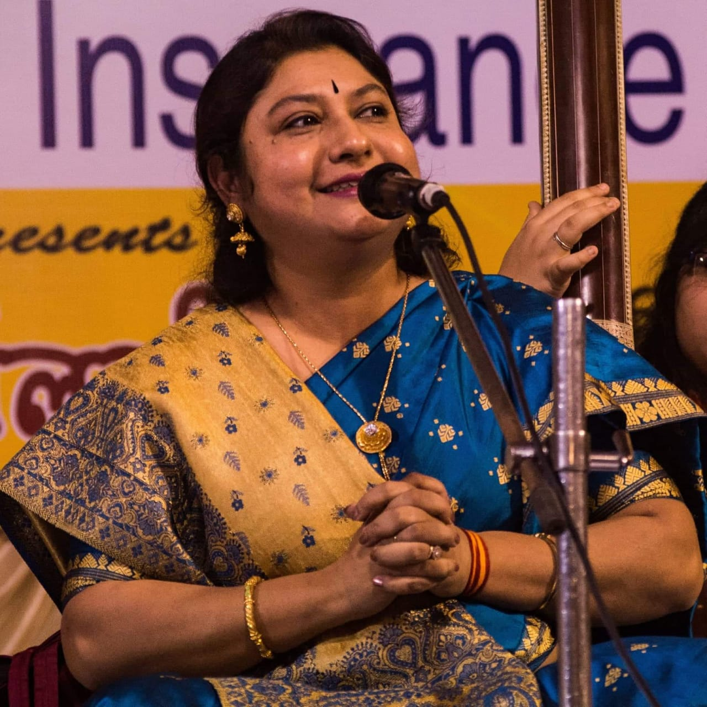

I am Bishnupriya Chakrabarty, a renowned Indian classical singer. With a musical journey spanning over 25 years, I have trained under esteemed gurus and received accolades for my exceptional talent in khayal, thumri, dadra, and bhajan. Join me on a mesmerizing musical voyage!
"Saraswati Vandana”
Sung in Raag Bhairavi, this is a divine offering to the Goddess of Knowledge and Art
Thumri : “Raag Pilu”
A Soulful Rendition Evoking Emotions and Melodies in the Beloved Raag
My previous shows have been at…
Delhi
Varanasi
Bangalore
Gulab Bari Festival, Benaras Hindu University, Kalaprakash, Amar Ujala Virasat
VSK Baithak, India Habitat Centre
Ranjini Fine Arts Annual, Sur Saptak, Chowdhury House
Ahmedabad
Gaya
Saptak, Aradhana, Sur Srinagar, Baroda
Sangit Natak, Sur salila, Falgu Utsav, Vishnupada Mandir